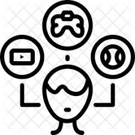
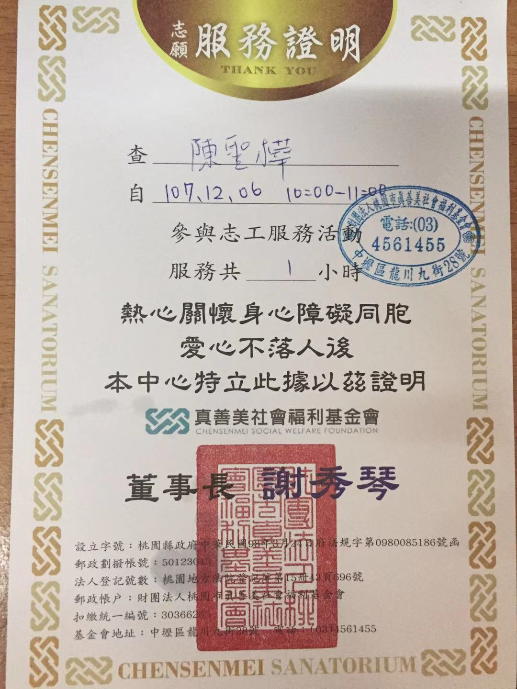
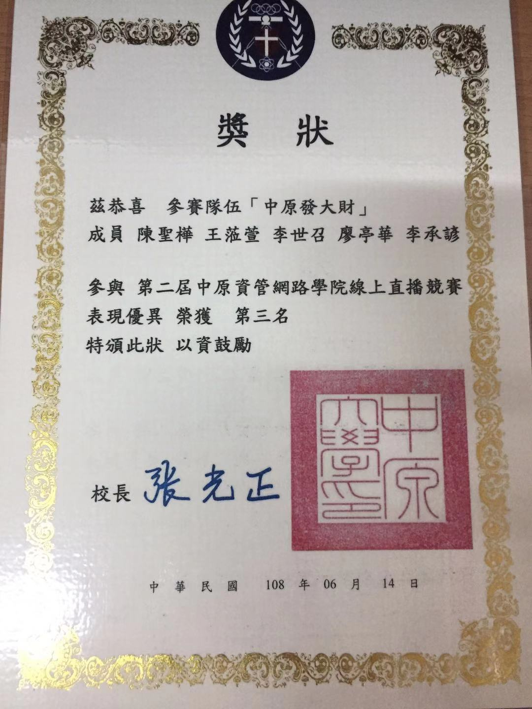

2014/09-2015/03
離開高中，前往西雅圖讀語言學校，認識來自各地非英語國家人士，其中不乏優秀的朋友/長輩，像是哥倫比亞籃球國家隊選手/日本Hitachi經理等等，學習各國/洲文化差異與特色，讓當時才17歲的我大開眼界，學而知不足。
陳聖樺 Sheng-Hua Chen
中原大學-資管系
CYIM
求學經歷 Education
2015/09-2017/12
Green River College有幸到美國西雅圖留學3年，學習歐美的風氣、文化，及多元文化下的合作與獨立生活，遇見各樣的人事物，使自己不侷限思想，拓展視野。
高中 High School
復旦高中 Fudan High School關於我 About Me
個性偏外向，樂於與人交談，喜歡美式文化，享受寫
完程式後的成就感，但更喜歡將創意及程式能力結合，
對於行銷與設計都亦有強烈興趣，喜歡跳脫舒適圈，
樂於嘗試不同的挑戰，在20出頭的年紀，平常空閒時
間讓自己嘗試各種新事物，學習新知識，也上網搜尋
前端相關、SEO等知識、閱讀英文雜誌/報紙等，並累
積作品練習寫程式/網頁、PS/AI等，不斷的充實自我。
聯絡資訊 Contact Info
聯絡電話 Phone:
+886 970080998
E-mail:
schen38@mail.greenriver.edu
興趣嗜好 Passion & Hobbies
Basketball
Rap/R&B Music
Traveling
Reading
Programming Skills
程式技能
HTML/CSS
網頁排版/ Bootstrap、撰寫
JavaScript
基礎撰寫、使用能力
Python
具備基礎程式能力
.NET
基礎程式設計、撰寫
mySQL
網頁資料庫連接、資料庫程式語法撰寫/正規化概念
Other Skills
其他技能
Adobe Photoshop/Illustrator
圖片設計
70%
English Proficiency
英文能力
IELTS : 6.0
GRE : 314 , AWA 3.5
Work Experiences
工作經驗
2018/03-2019/01斜角巷
賺取生活費，並學習服務業的態度與管理。
2014/09-2015/03
離開高中，前往西雅圖讀語言學校，認識來自各地非英語國家人士，其中不乏優秀的朋友/長輩，像是哥倫比亞籃球國家隊選手/日本Hitachi經理等等，學習各國/洲文化差異與特色，讓當時才17歲的我大開眼界，學而知不足。
2016/09-2017/06
就讀Green River College，擔任台灣文化社(Taiwanese Culture Association)公關，舉辦各式活動，例如:迎新烤肉、包水餃活動、三大節慶活動等等，一方面除了凝聚校園內台灣人感情，同時也讓外國人能夠體驗台灣文化。
2018/09-2019/01
於中原大學資管系的第一學期，修讀管理學課程，課程中參與志工服務，幫助真善美社會福利基金會內的憨兒小朋友們(屬輕-中度)體驗我們規劃的活動，希望能帶給他們一些生活的樂趣，也對於這個族群有更多的認識。
2018/09-2019/01
修讀中原大學資管系的軟體專案管理課程，於期末舉辦夜市擺攤活動，試著讓當地居民及逛夜市的人們體驗科技對於生活所帶來的改變，並於共25組的競賽中滿意度問卷調查及參與人數獲得第三名。